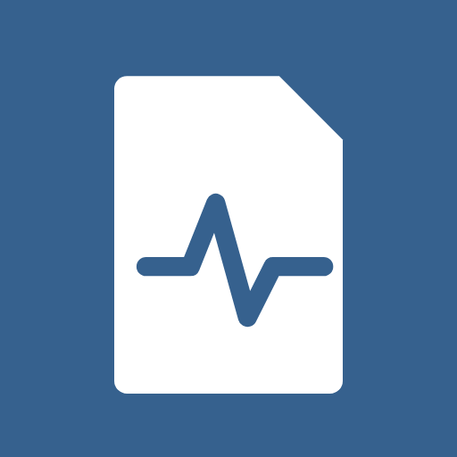
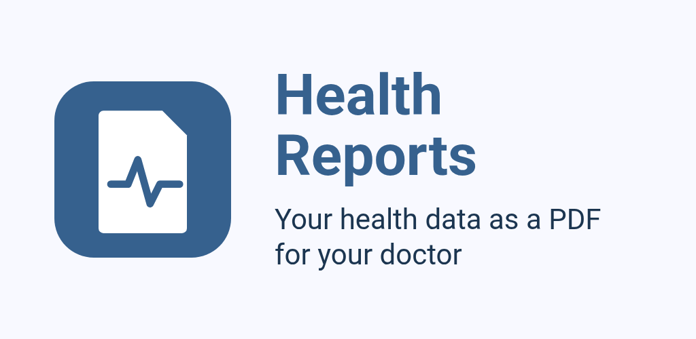
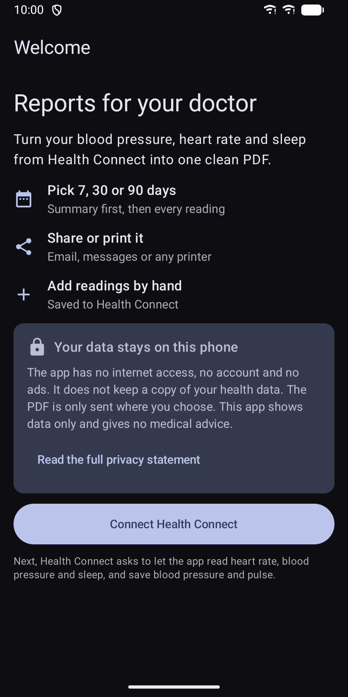
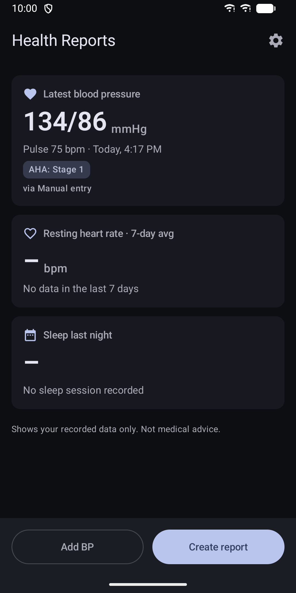
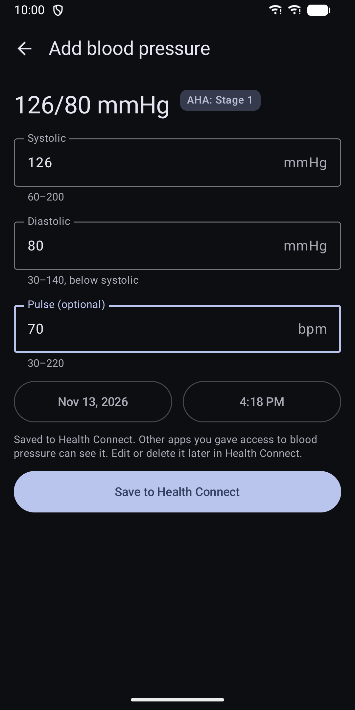
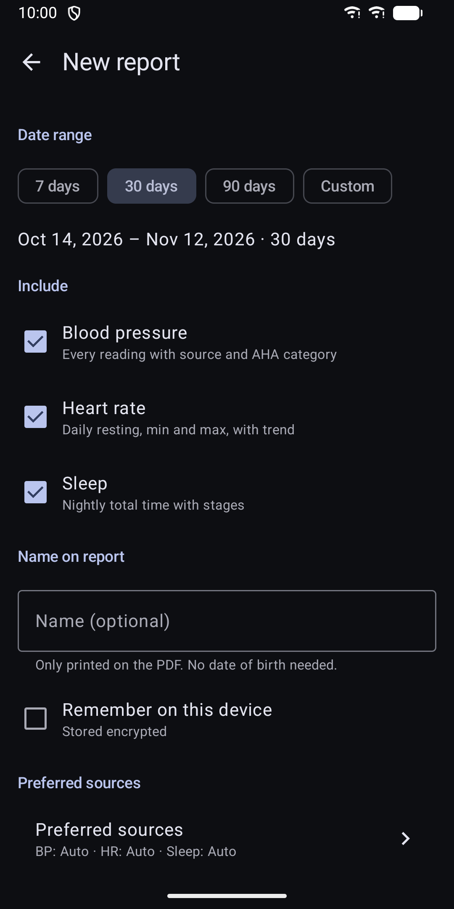
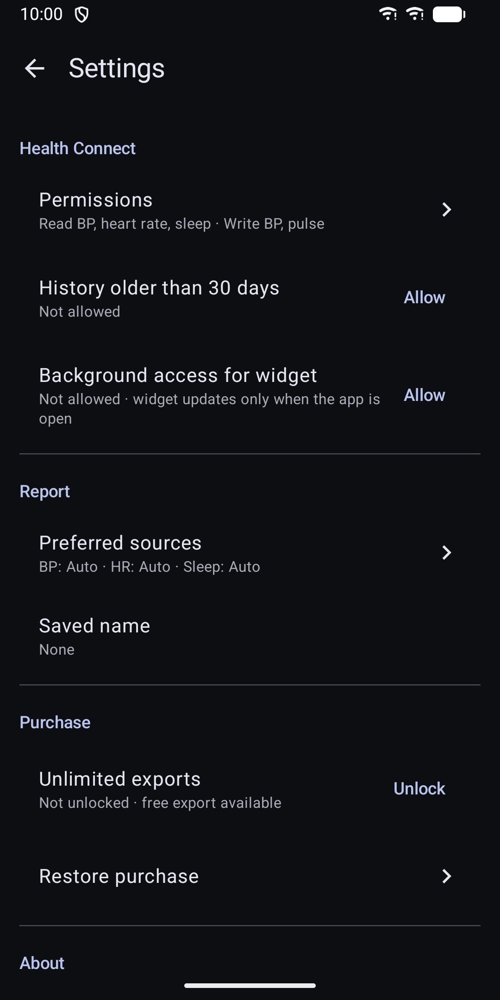

Health Reports: BP & HR PDF
Health Connect blood pressure, heart rate and sleep as a PDF for your doctor







About
Did your doctor ask for a log of your blood pressure, heart rate or sleep? Health Reports turns the data already stored in Health Connect into one clean PDF that you can share or print. ONE CLEAR REPORT - A summary page comes first: average, lowest and highest blood pressure and heart rate, the resting heart rate trend, average sleep, and the number of blood pressure readings per AHA category. - Then every reading: a blood pressure table with time, pulse and source app, daily resting heart rate with minimum, maximum and a trend chart, and a nightly sleep table with light, deep, REM and awake time. - Choose the last 7, 30 or 90 days, or a custom range. - Add your name if you like. No date of birth is needed. WORKS WITH THE APPS YOU ALREADY USE - Reads from Health Connect, so data from the apps that sync to it shows up. - Duplicate readings recorded by two apps are merged. You can pick a preferred app for each metric, or let the app choose. - Every reading shows the app it came from. ADD READINGS BY HAND - Enter systolic, diastolic and pulse. The app checks that the values are in a sensible range and saves the reading to Health Connect. HOME SCREEN WIDGET - Shows your last blood pressure reading and your 7-day average resting heart rate. YOUR DATA STAYS ON YOUR PHONE - The app has no internet permission and no account. It has no ads and no analytics. - It keeps no copy of your health data. The PDF is a temporary file and is deleted when you leave the preview. - Your name is saved only if you choose, and it is encrypted on the device. - Nothing leaves your phone unless you share or print a report yourself. FREE AND PAID FEATURES - Your first PDF export is free. - Further exports need a one-time in-app purchase through Google Play. It is not a subscription. - Viewing your data, the report preview, adding readings and the widget do not need a purchase. ACCESSIBLE - Light and dark theme follow your system setting. - Values, charts and PDF pages have screen reader descriptions. - Large touch targets and support for large font sizes. - Layouts for phones and tablets. IMPORTANT This app shows your recorded data only. It gives no diagnosis and no medical advice. Please talk to your doctor about your readings. Requires Health Connect. It is built into Android 14 and later, and available from Google Play for Android 9 to 13.